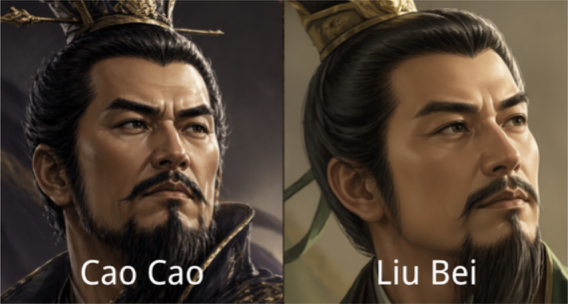

In most strategy card games like Hearthstone, units stay on the board for free after deployment. But in real history — especially during the Three Kingdoms period — logistical supply chains determined victory or defeat more than individual battles.
Supply Line is built around a single core verb: To Provision. Players are not only commanders but also quartermasters. Game tension stems not only from defeating enemies, but from sustaining your own army's supply lines while doing so. Every unit on the board costs upkeep each turn. Run out of grain — and your army collapses from within.

Three interlocking systems create a strategy experience unlike standard card games:
-
Frontline Wall — 3 SlotsPlayers deploy units onto a frontline with only 3 slots. You cannot attack the enemy General directly while they have any unit on the board — you must clear their troops first. This forces every player to think about board control before going for the kill.
-
Upkeep & SupplyUnlike Hearthstone where units stay for free, every unit in Supply Line costs grain each turn to keep alive. Food supplies do not auto-refresh — players must actively manage resources or watch their army starve and leave the board.
-
Summoning SicknessNew units cannot attack on the turn they are deployed. Combined with the Turn 1 income penalty for the first player, this prevents one-turn-kill strategies and forces both players into a slower, more tactical game.
-
Catch-up AbilitiesWhen a General falls to low HP, they automatically unlock a special ability. Liu Bei gains Taunt (forces enemies to target him, protecting weaker units). Cao Cao's next unit gains Rush (can attack immediately). These mechanics prevent death spirals and keep games competitive until the end.

Each general gives the player a distinct combat identity and a unique catch-up ability that activates under pressure. Avatars were generated with AI; card art was drawn by hand.
Catch-up: When damaged, Cao Cao's next deployed unit gains Rush — it can attack immediately on the turn it enters the board, enabling sudden aggressive counter-plays.
Catch-up: When HP falls to 10 or below, Liu Bei's next unit automatically gains Taunt — enemies must attack it first, shielding weaker units and buying time to recover.
Sun Quan is planned for the next development phase, adding a third distinct playstyle focused on naval logistics and rapid resource recovery.

Supply Line went through multiple design iterations — starting as a physical card prototype and evolving into a digital PvE game. Each playtest revealed a new problem that pushed the design forward.
Started from the verb "To Provision." Designed a paper prototype with 50–60 cards, grain tokens, and two generals. First playtests revealed three critical problems: the game ended too fast (OTK on Turn 1), the core supply mechanic was never triggered, and losing players had no way to fight back.
Introduced the 3-slot frontline wall, Summoning Sickness, the Turn 1 income penalty, and General catch-up abilities. These changes slowed the game down, forced players to engage with the supply system, and gave losing players a path back into the game.
Moved to Unity to handle the complex math of upkeep, HP, and resource tracking. The first digital version implemented 3–4 core mechanisms. The AI opponent was too weak for meaningful testing, but the digital format eliminated calculation errors that plagued the paper version.
Originally designed as a PvP game, but networked multiplayer proved too complex to develop within the project timeline. Pivoting to PvE allowed better focus on balancing core mechanics and testing the supply system without the added complexity of network logic.
All game mechanics implemented. Added general avatars (AI-generated) and hand-drawn card art. Final phase: bug fixes and UI polish.
The video below shows a full game session — demonstrating the upkeep system, frontline management, and a catch-up ability triggering in the late game.
A complete PvE session showing supply management, frontline tactics, and General abilities.
▶ Watch on YouTube